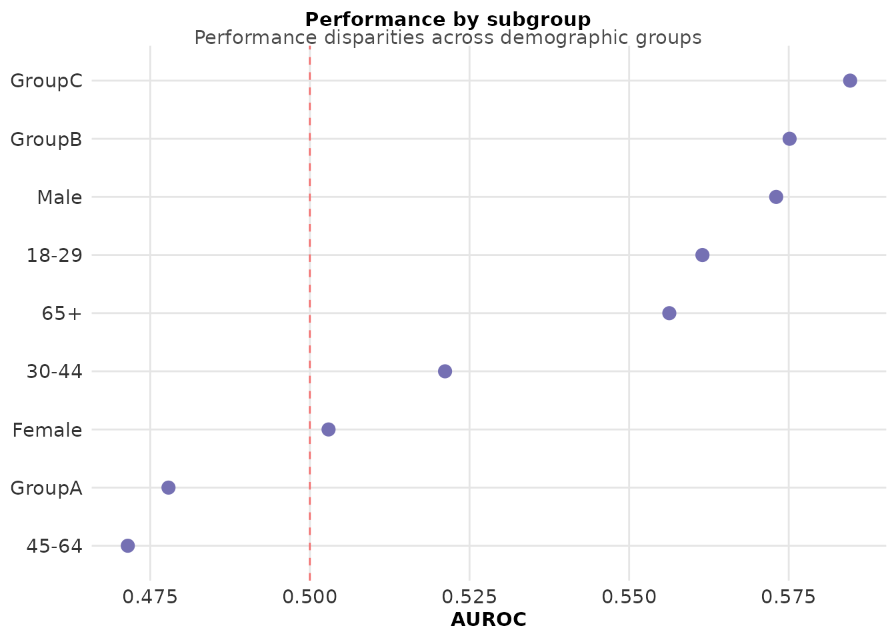
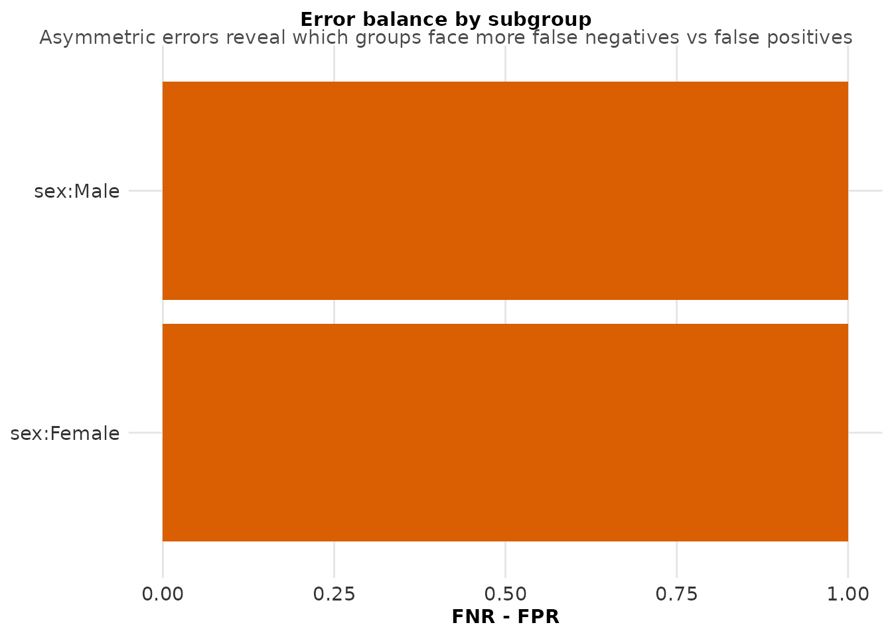

fairness-audit
fairness-audit.Rmd
library(langAssessR)
library(ggplot2)
library(dplyr)
#>
#> Attaching package: 'dplyr'
#> The following objects are masked from 'package:stats':
#>
#> filter, lag
#> The following objects are masked from 'package:base':
#>
#> intersect, setdiff, setequal, union
set.seed(456)Why Fairness Auditing Matters
Language-based models can perform differently across demographic groups, potentially amplifying healthcare disparities. Systematic fairness auditing reveals these biases.
Demonstration
- Generate diverse population data
# Simulate data with demographic variation
sim <- simulate_lang_data(n = 400, n_sites = 3, seed = 789)
# Extract features and fit model
features <- la_features(sim$transcripts$narrative)
model <- la_fit(features[,-1], sim$participants$y_bin)
predictions <- la_predict(model, features[,-1])
# Prepare subgroup data
subgroups <- data.frame(
sex = sim$participants$sex,
race = sim$participants$race,
age_group = sim$participants$age_group
)
# Show group distributions
table(subgroups$sex)
#>
#> Female Male
#> 217 183
table(subgroups$race)
#>
#> GroupA GroupB GroupC
#> 234 130 36
table(subgroups$age_group)
#>
#> 18-29 30-44 45-64 65+
#> 93 104 130 73- Conduct fairness audit
fairness_results <- audit_fairness(
pred = predictions,
y = sim$participants$y_bin,
groups = subgroups,
threshold = 0.5
)
# Performance by subgroup
print(fairness_results$auc_by_group)
#> subgroup facet auc lcl ucl
#> 1 Male sex 0.5730329 NA NA
#> 2 Female sex 0.5029240 NA NA
#> 3 GroupC race 0.5846154 NA NA
#> 4 GroupB race 0.5751328 NA NA
#> 5 GroupA race 0.4778568 NA NA
#> 6 65+ age_group 0.5562954 NA NA
#> 7 30-44 age_group 0.5211712 NA NA
#> 8 18-29 age_group 0.5614815 NA NA
#> 9 45-64 age_group 0.4714835 NA NA
# Error balance
print(fairness_results$error_balance)
#> subgroup fnr fpr
#> 1 sex:Male 1 0
#> 2 sex:Female 1 0- Visualize disparities
# AUC by subgroup
plot_auc_by_group(fairness_results$auc_by_group) +
geom_hline(yintercept = 0.5, linetype = "dashed", color = "red", alpha = 0.5) +
labs(subtitle = "Performance disparities across demographic groups")
#> Warning: Removed 9 rows containing missing values or values outside the scale range
#> (`geom_segment()`).
# Calibration by sex
if(nrow(fairness_results$calibration_bins) > 0) {
plot_calibration_by_group(fairness_results$calibration_bins) +
labs(subtitle = "Calibration differences indicate systematic over/under-prediction")
}
# Error balance (FNR - FPR)
plot_error_balance(fairness_results$error_balance) +
labs(subtitle = "Asymmetric errors reveal which groups face more false negatives vs false positives")
- Quantify disparities
# Calculate disparity metrics
auc_by_group <- fairness_results$auc_by_group
# Find max disparity
auc_range <- range(auc_by_group$auc, na.rm = TRUE)
max_disparity <- diff(auc_range)
# Identify worst-performing group
worst_group <- auc_by_group %>%
filter(auc == min(auc, na.rm = TRUE)) %>%
pull(subgroup)
# Best-performing group
best_group <- auc_by_group %>%
filter(auc == max(auc, na.rm = TRUE)) %>%
pull(subgroup)
cat("Maximum AUC disparity:", round(max_disparity, 3), "\n")
#> Maximum AUC disparity: 0.113
cat("Best performance:", best_group, "(AUROC =", round(max(auc_by_group$auc, na.rm = TRUE), 3), ")\n")
#> Best performance: GroupC (AUROC = 0.585 )
cat("Worst performance:", worst_group, "(AUROC =", round(min(auc_by_group$auc, na.rm = TRUE), 3), ")\n")
#> Worst performance: 45-64 (AUROC = 0.471 )Implications
These disparities suggest the model may:
Work better for some populations than others
Require group-specific calibration
Need more diverse training data
Benefit from fairness-aware training methods
Recommendations
Always audit: Check subgroup performance before deployment
Set thresholds: Define acceptable disparity levels
Document disparities: Include in model cards
Monitor post-deployment: Track real-world fairness metrics
Consider interventions: Reweighting, resampling, or fairness constraints